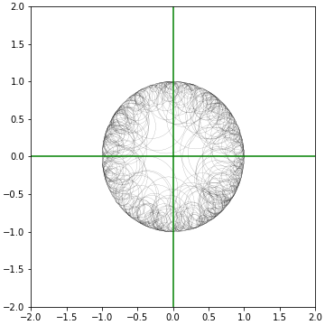

- 지난 추석, 간만에 긴장을 풀었습니다.
- 가끔 취미로 그림을 그리고는 하는데 python으로는 안그렸네요.
- 자다가 문득 코드가 떠올라 보름달을 그렸습니다.
1. 보름달은?
보름달이 어떻게 생겼는지 모르는 사람은 없을 겁니다.

검은 밤 하늘에 떠 있는 하얀 동그라미로 단순화할 수 있습니다.
토끼가 방아를 찧고 있는 듯한 모양이 있지만 잠시 잊기로 합니다.
하지만 그냥 동그라미를 그리기엔 심심합니다. 작은 동그라미를 여럿 겹칩니다.
2. 코드로 그리는 보름달
2.1. 코드로 그리는 그림
젠미디어: 이주행 ETRI 연구원 인터뷰
Techcrunch: The digital age of data art
- 무미건조한 코드나 데이터로 아름다움을 만들어내는 분들이 있으십니다.
- 데이터 시각화의 심미적 요소를 한껏 활용하는 것으로 볼 수도 있고
- 그림을 그리는 도구가 바뀌었을 뿐 데이터와 무관한 아름다움을 추구하기도 합니다.
- 이런 분들을 따라해 보기로 합니다
2.2. 약간의 기하학
중심을 (0,0)으로 하는 극좌표계 공간을 만듭니다.
반지름이 1인 공간 안에 랜덤하게 한 점을 골라 원의 중심을 잡습니다.
극좌표계를 사용하여 원점으로부터의 거리과 방위각으로 좌표를 잡으면 편리합니다.
matplotlib의 Circle을 이용해서 원을 생성합니다.
원의 반지름을
1-원점으로부터의 거리로 설정하면 원의 윤곽선에 항상 맞닿습니다.10개만 그려봅시다.
1
2
3
4
5
6
7
8
9
10
11
12
13
14
15
16
17
18
19
20
21
22
23
24
25from matplotlib.patches import Circle
num = 10 # 원의 수
fig, ax = plt.subplots(figsize=(5, 5),
constrained_layout=True)
# 극좌표계에서 원 생성
R = np.linspace(0, 1, 100) # 반지름의 범위: 0~1
pos_r = np.random.choice(R, size=num) # 랜덤 위치 (반지름)
pos_a = 2*np.pi*np.random.uniform(size=num) # 랜덤 위치 (방위각)
# 직교좌표계 변환
pos_x = pos_r * np.cos(pos_a) # 직교좌표계 x
pos_y = pos_r * np.sin(pos_a) # 직교좌표계 y
for x, y, r in zip(pos_x, pos_y, pos_r):
r_circle = 1-r # 원의 반지름
o = Circle((x, y), r_circle, fc="none", ec="k", alpha=1)
ax.add_patch(o)
ax.set_xlim(-2, 2)
ax.set_ylim(-2, 2)
ax.axvline(0, c="g")
ax.axhline(0, c="g")
2.3. 확률 제어
100개를 그리면 이렇습니다.
뭔가 특이한 점을 느끼셨을까요?
원의 중심점 분포를 그리면 이렇습니다.
1
2
3
4
5
6
7
8
9
10
11
12
13
14
15
16
17
18
19
20# 점들 사이 최단거리 계산
pos_xy = np.array(list(zip(pos_x, pos_y)))
d_shortests = []
for p in pos_xy:
dp = pos_xy-p
d_shortest = np.inf
for d in dp:
sd = np.sqrt(d[0]**2 + d[1]**2)
if 0 < sd < d_shortest:
d_shortest = sd
d_shortests.append(d_shortest)
# 시각화
fig, axs = plt.subplots(ncols=2, figsize=(8, 4), constrained_layout=True)
axs[0].scatter(pos_x, pos_y)
axs[0].axvline(0, c="g")
axs[0].axhline(0, c="g")
sns.kdeplot(d_shortests, cut=0, ax=axs[1], fill=True)
axs[1].set_xlim(0, max(d_shortests))원점 부근을 중심으로 하는 점들이 월등히 많습니다.
앞서 그림을 그릴 때 원의 반지름을
1-원점으로부터의 거리로 설정했지요.큰 원과 작은 원의 수는 비슷하더라도 작은 원은 여기저기 퍼져있고 큰 원은 뭉쳐있다는 의미입니다.
- 나쁘다는 것은 아닙니다.
- 전체 원의 가운데보다 바깥 부분에 많은 선이 그려진다는 뜻이고,
- 원의 갯수를 키우는 것 만으로도 뭔가 3D 느낌이 납니다.
- 500개를 그리면 이렇게 됩니다.
다만, 약간의 확률 조작을 통해 연출이 가능하다는 의미입니다.
예를 들어 이런 확률분포를 사용하면,
그림은 이렇게 바뀝니다.
1
2
3
4
5
6
7
8
9
10
11
12
13
14
15
16
17
18
19
20
21
22
23
24
25
26
27fig, ax = plt.subplots(figsize=(5, 5),
constrained_layout=True)
# 극좌표계에서 원 생성
R = np.linspace(0, 1, 100) # 반지름의 범위: 0~1
# np.random.choice에 매개변수 p 적용, 확률 제어
f = np.float_power(np.sin(R), 10)
p = (f/max(f))/sum(f/max(f))
pos_r = np.random.choice(R, size=num, p=p) # 랜덤 위치 (반지름)
pos_a = 2*np.pi*np.random.uniform(size=num) # 랜덤 위치 (방위각)
# 직교좌표계 변환
pos_x = pos_r * np.cos(pos_a) # 직교좌표계 x
pos_y = pos_r * np.sin(pos_a) # 직교좌표계 y
r_circles = []
for x, y, r in zip(pos_x, pos_y, pos_r):
r_circle = 1-r # 원의 반지름
r_circles.append(r_circle)
o = Circle((x, y), r_circle, fc="none", ec="k", alpha=1, lw=0.1)
ax.add_patch(o)
ax.set_xlim(-2, 2)
ax.set_ylim(-2, 2)
ax.axvline(0, c="g")
ax.axhline(0, c="g")
2.4. 달 띄우기
달을 그리는 함수를 만들어봅니다.
앞에서 만든 함수에 딱 하나,
faceccolor와 ‘edgecolor`를 제어하는 매개변수를 추가했습니다.facecolor에 numpy array를 넣으면 랜덤하게 색을 입히는 기능을 추가했고요.
1
2
3
4
5
6
7
8
9
10
11
12
13
14
15
16
17
18
19
20
21
22
23
24
25
26
27
28
29
30
31
32
33
34
35
36def plot_fullmoon(size, scale=5, fc="w", ec="none", filename="fullmoon", **kwargs):
scale = np.float(scale)
fig, ax = plt.subplots(figsize=(20, 20), constrained_layout=True)
ax.set_facecolor("k")
ax.spines[["top", "left", "bottom", "right"]].set_visible(False)
ax.set_xticks([])
ax.set_yticks([])
# random circle
R = np.linspace(0, 1, size)
F = np.float_power(np.sin(R), 10)
P = (1-F/max(F))/sum(1-F/max(F))
pos_r = np.random.choice(R, size=size, p=P)
pos_a = 2*np.pi*np.random.uniform(size=size)
pos_x = pos_r * np.cos(pos_a)
pos_y = pos_r * np.sin(pos_a)
for x, y, r in zip(pos_x, pos_y, pos_r):
if isinstance(fc, np.ndarray):
fc = np.array([0.8, 0.8, 0.8]) + np.array([np.random.normal(loc=0.1, scale=0.05), np.random.normal(loc=0.1, scale=0.05), np.random.normal(loc=0.1, scale=0.05)])
fc[0] = min(fc[0], 1)
fc[1] = min(fc[1], 1)
fc[2] = min(fc[2], 1)
o = Circle((x, y), 1-r, fc=fc, ec=ec, alpha=scale/size, **kwargs)
ax.add_patch(o)
ax.set_xlim(-2, 2)
ax.set_ylim(-2, 2)
fig.set_facecolor("k")
fig.savefig(f"{filename}.png", dpi=300)
plot_fullmoon(10, fc=np.array([0.6, 0.6, 0.6]), filename="fmc_10", ec="w", lw=3)원 10개로 그리면 이런 달이 떠오릅니다.
- 원 20개, 50개, 100개로도 그려볼 수 있겠죠.
- 꼭 추석이 아니더라도 모두들 둥근 달처럼 행복하시기 바랍니다.